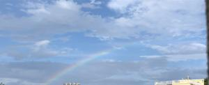

うるがいの話 ある日
最新: 松岡修造のせいか
うるがいとは 前提知識です
カニの画像をクリックすると『うるがいの話』サイトを表示します
うるがい(ｳﾙｶﾞｲ urugai)とは、『もずくがに』の名前でとても大きくなります。
たながー（ﾀﾅｶﾞｰtanagaa）とは手長えびのことで、何種類かあり大きいのは車 エビぐらいになります。
ぶながー(bunagaa)とは、赤い髪の毛、赤い身体、そして身長は１ｍ２０ｃｍ ぐらい、川の蟹を食べているの目撃された。場所は沖縄県国頭郡大宜味村のと ある村僕の隣近所に住んでいる爺さんから、聞いた話です。
2021年08月07日 (土）
松岡修造のせいか
15:30

え！、試合終わっている！、沖縄初の五輪金メダリストのインタビューがＢＳ
で放送されている、インタビューになかなか答える事ができない・・。夕方６
時から、決勝をみるためにテレビの前で構えていた。試合の時間は７時５０分
だよとヨメから言われ、ＱＡＢ「東京五輪・陸上男子４００ｍリレー・決勝」
のチャンネルを変えてみていた、暫くすると松岡修造と空手団体にでる人達が
出ていた。ん！、ＱＡＢで放送するのかな、確かにＢＳでは空手はしていない
しと惰性でみているとそのうち、松岡修造が『空手の決勝時間は遅れているの
で、陸上に映像を変えます』、ん、でもそのうち決勝の時間になるとＬＩＶＥ
の空手を放送すると勝手に思い込んでしまった。ＱＡＢで放送されたのは１１
時半に録画で。期待された陸上男子４００ｍリレーは・・呆然としてしまった
でも、空手で金がとれてよかったし、もとバスケット部員として女子バスケッ
トがフランスに勝ったのは嬉しかった（テレビのチャンネルは殆どがここだっ
た）。